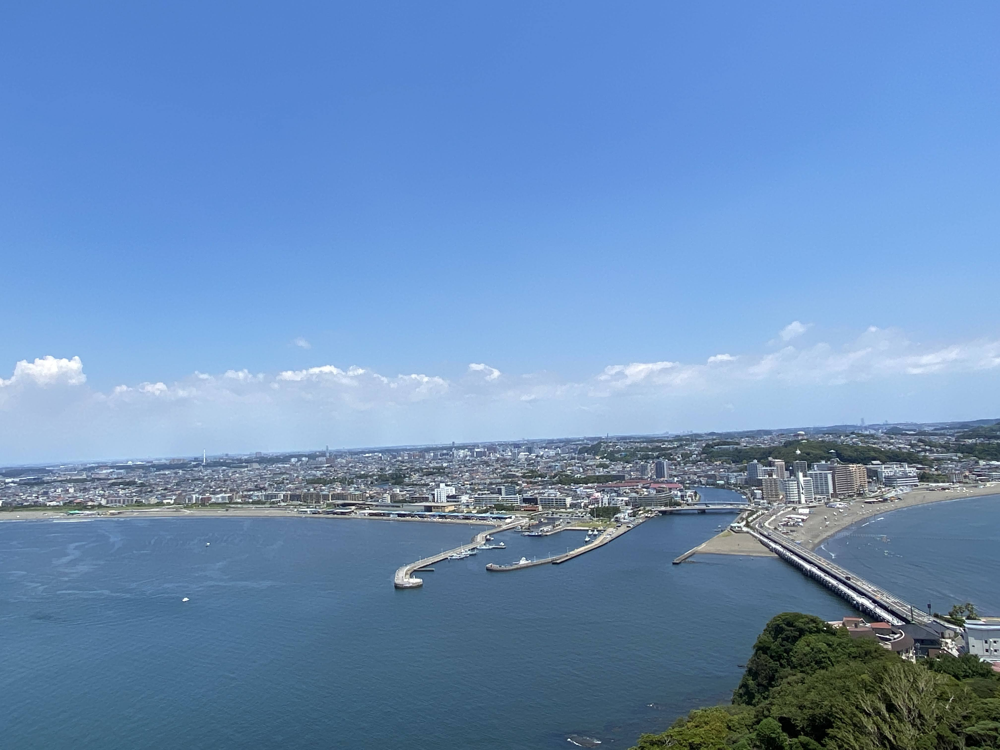

競プロのまとめ
3/6 AtCoder Beginner Contest 194にて入茶

10/2 AtCoder Beginner Contest 221にて入緑

12/12 第21回日本情報オリンピック 2次予選突破
この1年はかなり競技プログラミングに力を入れました。
目標にしていた緑色になる事ができ、最後のチャンスであった情報オリンピックでも本選進出をすることができてとても嬉しいです！
見たアニメまとめ
1月
ドメスティックな彼女
新世紀エヴァンゲリオン
弱キャラ友崎くん
2月
五等分の花嫁∬
岸部露伴は動かない
3月
ドラゴンクエスト ユア・ストーリー
新世紀エヴァンゲリオン劇場版 Air/まごころを、君に
この世界の片隅に
生徒会役員共* 番外編 / 劇場版 生徒会役員共
この素晴らしい世界に祝福を！紅伝説
涼宮ハルヒの憂鬱 / 涼宮ハルヒの消失
転生したらスライムだった件 第2期
パプリカ
4月
ホリミヤ
アオハライド
俺の妹がこんなに可愛いわけがない(シーズン1, 2)
5月
魔法少女まどか☆マギカ / 劇場版魔法少女まどか☆マギカ [前編]始まりの物語 / 劇場版魔法少女まどか☆マギカ [後編]永遠の物語
6月
聲の形
マギアレコード
7月
ひぐらしのなく頃に 新シリーズ: ひぐらしのなく頃に卒:
おおかみこどもの雨と雪
サマーウォーズ
ウマ娘 プリティーダービー/ウマ娘 プリティーダービー Season 2
機動戦士ガンダム
8月
機動戦士ガンダム 鉄血のオルフェンズ
劇場版メイドインアビス 深き魂の黎明
泣きたい私は猫をかぶる
虐殺器官
劇場版 機動戦士ガンダム/劇場版 機動戦士ガンダムII 哀・戦士編/劇場版 機動戦士ガンダムIII めぐりあい宇宙編
9月
時をかける少女
秒速5センチメートル
響け！ユーフォニアム/響け！ユーフォニアム2/劇場版 響け！ユーフォニアム～北宇治高校吹奏楽部へようこそ～/劇場版 響け! ユーフォニアム～届けたいメロディ～
10月
リズと青い鳥
機動戦士ガンダム 逆襲のシャア
機動戦士ガンダム THE ORIGIN(I ~ VI)
劇場版 ヴァイオレット・エヴァーガーデン
11月
機動戦士ガンダム 第08MS小隊
機動戦士ガンダム ポケットの中の戦争
12月
劇場版 響け！ユーフォニアム～誓いのフィナーレ～
機動戦士Zガンダム(視聴中)
1番ハマったのはガンダムでした。
見た映画まとめ
機動戦士ガンダム 閃光のハサウェイ
シン・エヴァンゲリオン劇場版
新世紀エヴァンゲリオン劇場版 Air/まごころを、君に
ヤクザと家族 The Family
劇場版 呪術廻戦0
竜とそばかすの姫
劇場版 ソードアート・オンライン -プログレッシブ- 星なき夜のアリア
007 ノー・タイム・トゥー・ダイ
花束みたいな恋をした
エターナルズ
面白かった順(独断と偏見)にソートしてあります。下の方は割とテキトーです。
シンエヴァとハサウェイのどちらを1番にするか迷いましたが、今現在比較的ハマり続けているのがハサウェイなのでハサウェイを1番にしました。
読んだ漫画まとめ
チェンソーマン
SPY×FAMILY
怪獣8号
ファイアパンチ
ルックバック
22-26
進撃の巨人
DEATH NOTE
古見さんはコミュ障です
ブルーピリオド
かぐや様は告らせたい
五等分の花嫁
葬送のフリーレン
チ。-地球の運動について-
彼女、お借りします
チェンソーマンと進撃の巨人が群を抜いて面白かったです。どっちもアニメが楽しみです。
読んだ本まとめ
プログラミングコンテストチャレンジブック [第2版]: 問題解決のアルゴリズム活用力とコーディングテクニックを鍛える
パズルグラム
行列・行列式・ベクトルがきちんと学べる線形代数
蟻本はかなり読み進めましたが、中級編の半分くらいと上級編の殆どはまだ読んでいないので、2022年も引き続き読み進めていきたいです。
線形代数の入門書はちょうど学校でベクトルをやっているので、それが終わり次第読み直したいです。(最初読んだときはわりと訳が分からなかった)
やったゲームまとめ
Cuphead
OCTOPATH TRAVELER
DELTARUNE(Chapter 2)
ポケットモンスター ブリリアントダイヤモンド
どれも違った面白さがありました。
ダイパはまだバッジ2個なのでそのうち殿堂入りします。
行った場所まとめ
7月 江の島
7月 箱根
9月 京都
12月 軽井沢
なんだかんだ色々な所に行っていました。
特にすごかったのは京都でした。観光地が多すぎて、京都駅周辺を無計画に歩いているだけでも有名な観光地にエンカウントするバグみたいな所でした。
というわけで2021年のまとめでした。2022年もいい年にしていきたいです。